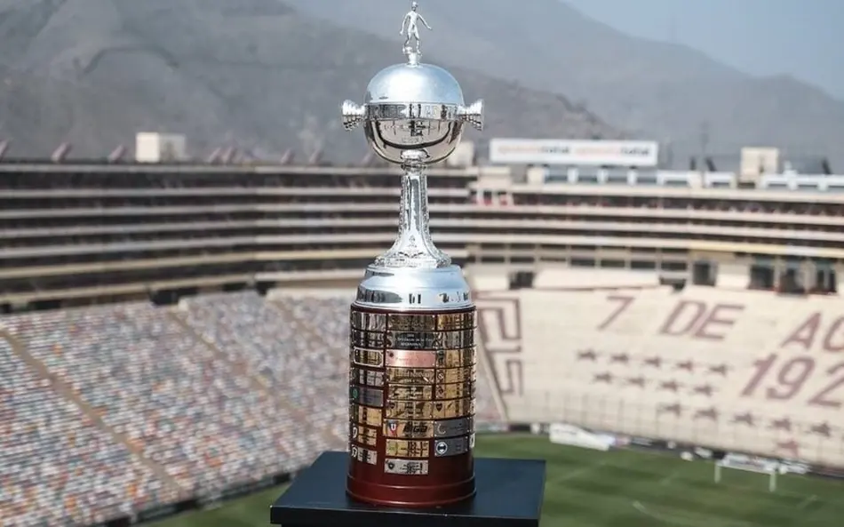
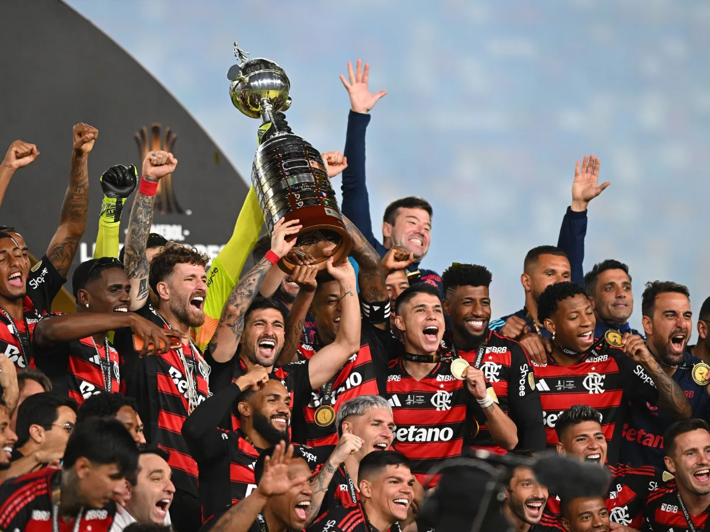
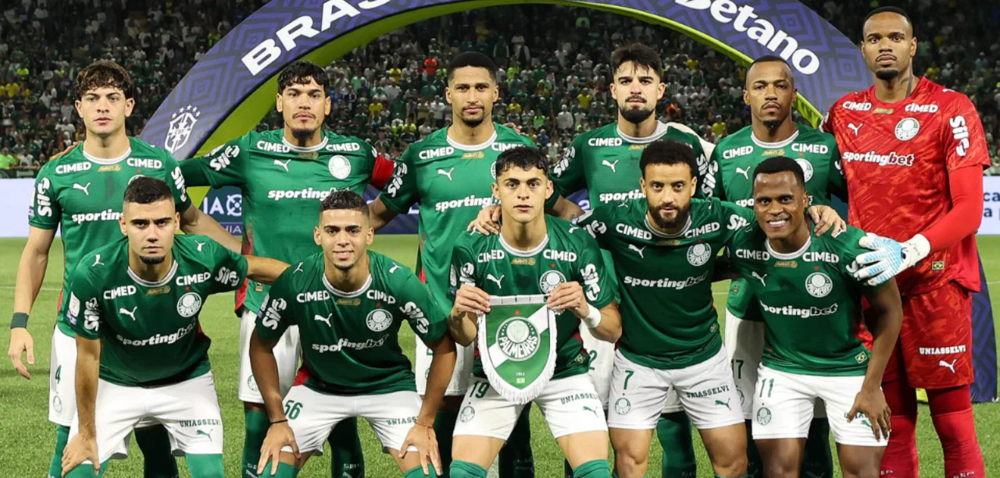

Libertadores 2026 pega fogo com brasileiros dominando e rodada decisiva na fase de grupos
Palmeiras, Flamengo, River Plate e Atlético Nacional aparecem entre os destaques da competição continental.

A Copa Libertadores 2026 entra em sua fase mais intensa da temporada com confrontos decisivos, grandes atuações e clubes brasileiros novamente dominando a competição continental. A disputa pelas vagas no mata-mata está completamente aberta em vários grupos, aumentando ainda mais a pressão sobre os favoritos.
Entre os principais destaques aparecem Palmeiras e Flamengo, que seguem apresentando campanhas sólidas e aparecem como fortes candidatos ao título. O Palmeiras mantém uma das melhores defesas da competição, enquanto o Flamengo chama atenção pelo poder ofensivo e pela intensidade no setor de ataque.

Além dos brasileiros, clubes tradicionais sul-americanos também seguem fortes na disputa. O River Plate voltou a mostrar força dentro do Monumental de Núñez e lidera seu grupo com atuações consistentes. Já o Atlético Nacional surpreendeu pela organização tática e se tornou uma das equipes mais perigosas da competição até aqui.
A rodada mais recente contou com jogos extremamente movimentados, gols importantes nos minutos finais e mudanças relevantes na classificação. Algumas equipes já encaminharam vaga para as oitavas de final, enquanto outras chegam pressionadas para os últimos confrontos da fase de grupos.

A Conmebol espera audiência recorde para esta reta decisiva da Libertadores. O equilíbrio entre clubes brasileiros, argentinos e colombianos aumenta a expectativa para o mata-mata, que promete confrontos históricos nas próximas semanas.
A final da Libertadores 2026 ainda não possui favorito absoluto. Palmeiras, Flamengo, River Plate, Boca Juniors e Atlético Nacional aparecem entre os times mais fortes da competição, mas o torneio segue extremamente aberto e imprevisível.